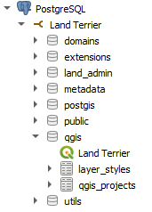
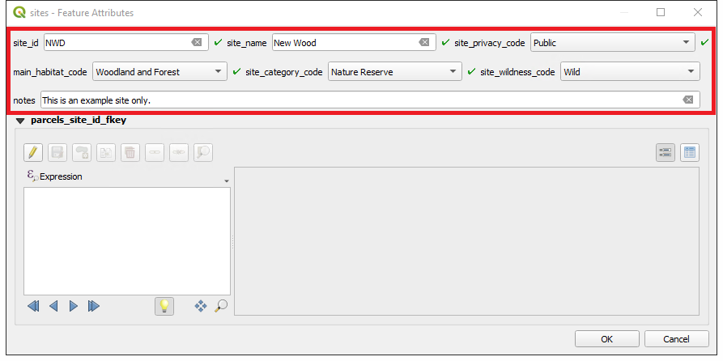
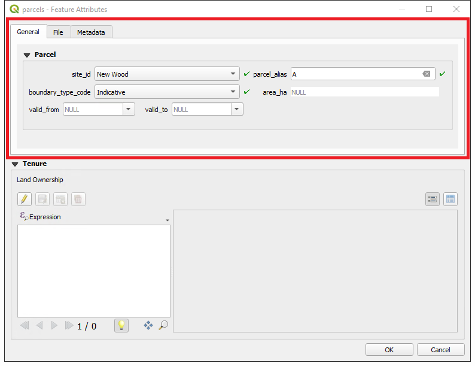
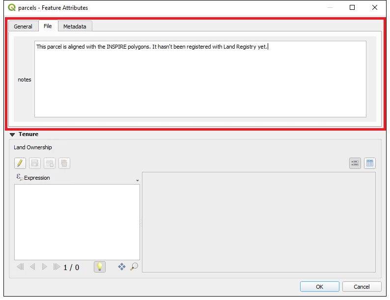
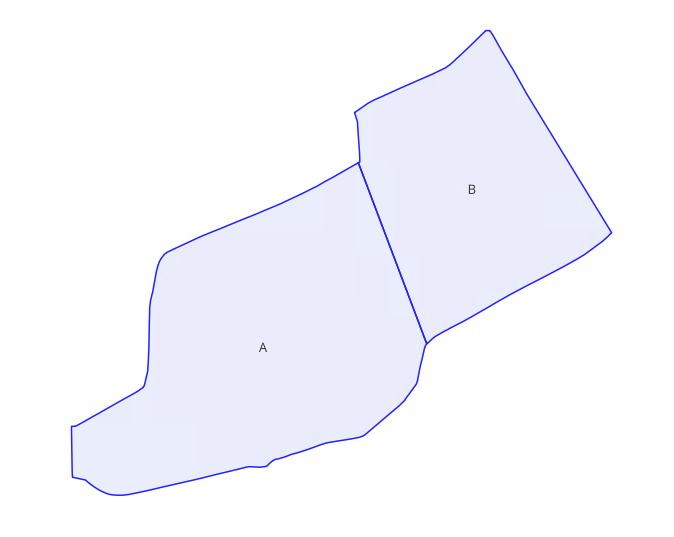
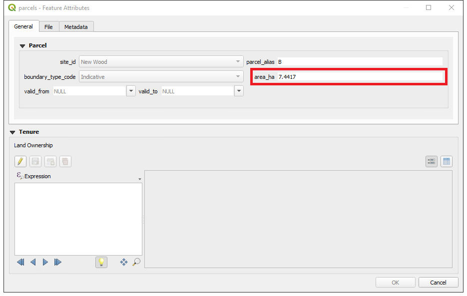
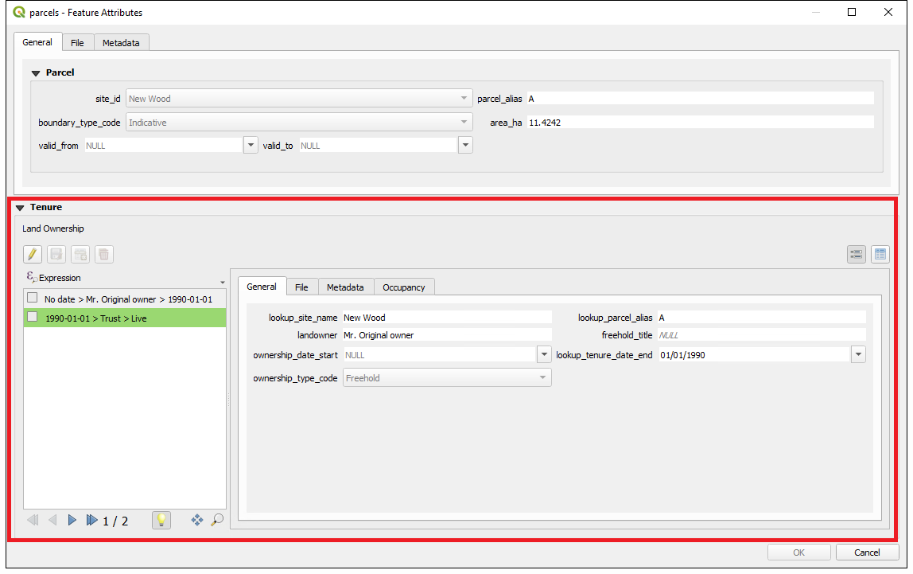
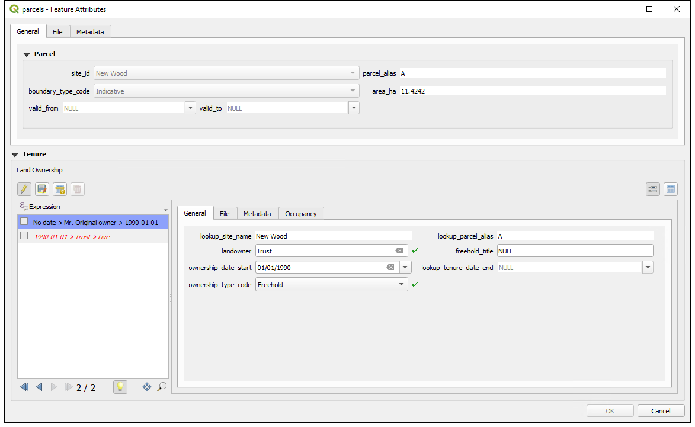
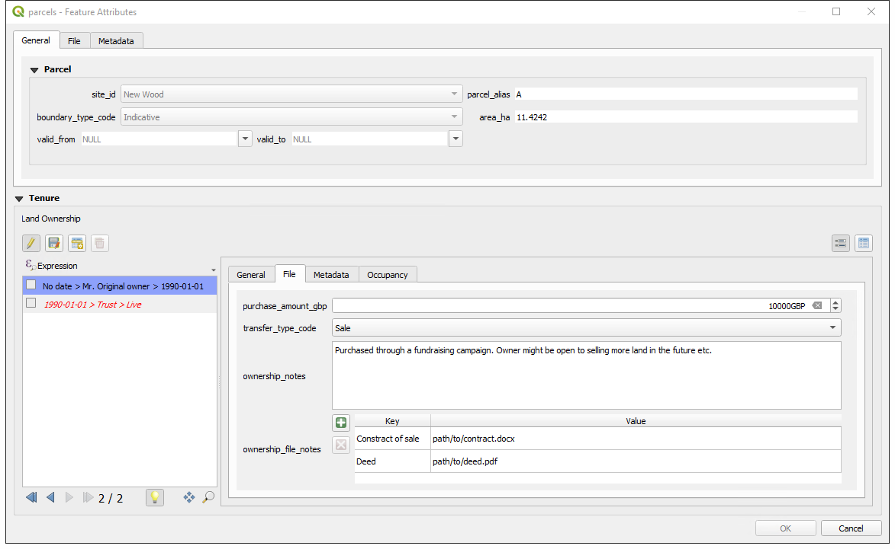
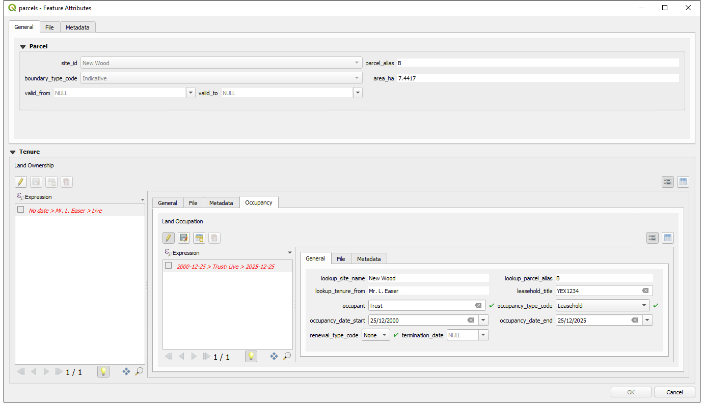

User Guide
Introduction
The Land Terrier has a relational model so it is important to add table entries in the correct order. A QGIS project has been created in the qgis schema to aid with managing the layers.

Workflow
Adding Sites
The first step is to make sure that a site is registered in the land_admin.sites table.
Start by adding a new record  to the
to the sites table.
Check the spelling of the site_name as this will be the the definitive name and must be used as throughout the Trust.
Create an alpha-numeric code to use as the site_id. Try to make it a three letter code to keep it as simple as possible. This will become the unique identifier for the site and must be used consistently across the Trust.

Click OK and save the layer edits  .
.
Adding Parcels
Inserting/updating parcel geometries requires advanced digitising techniques to maintain topologies, snap to nodes, and avoid overlaps. Any errors will result in misaligned site boundaries so this must be carried out with care by a GIS specialist.
Begin by digitising the parcels on the land_admin.parcels layer  .
.
Digitise against the INSPIRE polygons if available. Make sure they are topologically correct with no gaps or overlaps.
Complete the form and remember to assign the parcel to a site (available in the drop-down).

You can also add additional information about the parcel using the File tab.

Notice that the Metadata tab and area_ha field are not populated yet. This happens when the layer is committed to the database (see parcel triggers).
Leave the valid to and valid from fields blank. See Modifying parcel geometries on how to use these fields to update the parcel geometries.
Click OK and save the layer edits  . This will create a unique
. This will create a unique parcel_uuid identifier that will be referenced by the ownership layer and is also used for tracking the changes to the parcel geometry over time.
Do not try to add tenure information yet. The parcel needs to be committed to the database first with the Save Layer Edits  . This will generate the
. This will generate the parcel_uuid.

If you now inspect a committed parcel, you will see area_ha information has been updated automatically.

Adding Ownership
Ownership and occupancy information can be added directly to the tables, but that requires inputting and referencing the correct parcel uuids. Therefore, it is easier to start at the parcel level and use the in-built forms to keep the information up to date and to maintain the references.
Open up the parcel form using the identify tool  .
.
Add a new ownership entry in the Tenure section of the form.

It is highly recommended that you start with an original owner. All land is owned by someone so there will have been an owner before the Trust acquired it. We are not concerned when the original owner acquired the land (this may not even be known) so the ownership_date_start should be left blank.
If the Trust has acquired the land and become the owner, create a new record with the ownership_date_start as the date the Trust came into legal ownership. This cannot be left blank.
In order for the tenure to be tracked correctly, the Wildlife Trust that the terrier is tracking must simply be entered as ‘Trust’. This is true for both ownership (landowner) and occupancy (occupant) records.

You may also wish to add additional information about the ownership under the File tab.

Make sure to click OK and commit the changes to generate the ownership_uuid.
Notice that the expression for the record on the left automatically updates to show the ending of the previous owner’s tenure.
Adding Occupancy
Occupancy works by being linked to an ownership record. This allows for the two way scenarios of Trusts owning land and leasing it out; and Trusts being the leaseholders on land they don’t own.
To add an occupancy record, select the ownership record you want it to refer to.
Go to the last tab called Occupancy.
Fill in the information. All occupancy records must have an occupancy_date_start. There are some scenarios where the occupancy_date_end is either unknown or it is in a periodic tenancy where, as long as you keep paying, the lease carries on.

The renewal_type_code and termination_date are used to indicate what happens once you are past the end date. Some leases will “holdover” after expiry whereas others have a legal cutoff. If you are past occupancy_date_end you will either enter a holdover or a squat. These leases need to be re-negotiated. Once you have agreed a new lease or have vacated the site, you should set the termination_date. This field stops the holdover or ends the squat.
To make sure that there is a continual timeline of occupancy, the next negotiated lease should start when the previous one is terminated.
Advanced Workflow
Modifying parcel geometries
From time-to-time, you may find yourself in need of editing the parcel geometries such as realigning it with updated Land Registry data or if it gets split as part of a sale. It is important to maintain the lineage of the geometries.
Set the valid_to column to the date when the current geometry ceases to be valid.
Click OK and commit the changes  . This will archive the current geometry and add it to the
. This will archive the current geometry and add it to the land_admin.parcel_history table via a trigger. Notice now that is you inspect the parcel, the valid_from date will be the date you just entered and the valid_to date will again be NULL.
You are now free to modify the geometry of the parcel and save (just leave the valid_to date as NULL).
The parcel_history table can be freely edited. So if you want to construct a parcel’s history manually, you can do so by using the parcel_uuid.
Handling model edge cases
There are some specific edge cases that need to be handled in a specif way so that the model logic is applied correctly.
Scenario:
The trust is occupying some land (leasehold/management agreement etc.) and the original landowner decides to sell but the Trust is to continue occupying.
Resolution:
- Create a new ownership record with the date the new owner comes into possession.
- Terminate the Trust’s current lease with the same date as the new owner’s possession.
- Setup a new lease with the new owner starting with the new date.
Outputs
There are two main outputs from the terrier:
public.sites_export
public.tenure_export